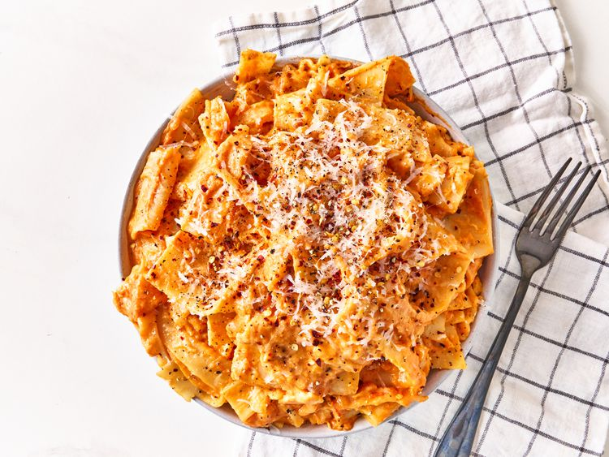

Cheesy Lasagna Pasta

Descritption
This 3 ingredient cheesy lasagna sheet pasta could not be easier.
Serve topped with Parmesan cheese, red pepper flakes, and freshly
cracked black pepper if you like.
Ingredients
- 8 ounces of lasagna noodles, broken in half
- 1 (24-ounce) jar tomato sauce
- 8 ounces of shredded whole milk mozzarella cheese
Steps
- Bring a large pot of lightly salted water to a boil. Cook lasanga
noodles in the boiling water, stirring occasionally, until tender yet
firm to the bite, 10 to 12 minutes.
- Strain noodles and return to the pot. Add tomato sauce and cook on
medium heat until sauce is heated through, about 5 minutes.
- Add cheese and stir until cheese is melted. Serve immediately.
Home